第 8 章 传递函数
典型调节器系统通常可以用至多二阶、三阶或四阶微分方程描述其本质。相比之下，电话系统中使用的典型负反馈放大器，其微分方程组阶数往往要高得多。有一次出于闲暇中的好奇，我数了一下，如果直接用微分方程处理我刚设计的一个放大器，那组方程会有多少阶。结果是 55 阶。
本章引入传递函数的概念。传递函数是线性系统输入输出关系的一种紧凑描述。把传递函数与框图结合起来，可以得到处理复杂线性系统的强大方法。本章还会讨论传递函数与系统动态其他描述之间的关系。
8.1 频域建模
图 8.1 是一个典型控制系统的框图，它由待控制过程以及结合反馈和前馈的控制器组成。前两章已经说明了如何用各个模块的状态空间描述来分析和设计这类系统。第 2 章也提到过，另一种方法是关注系统的输入输出特性。由于系统之间正是通过输入和输出连接的，可以期待这种视角有助于理解整体行为。对线性系统而言，传递函数就是实现这种视角的主要工具。
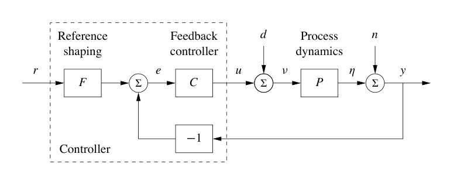
传递函数的基本思想来自考察系统频率响应。设输入信号是周期的，那么可以把它分解成一组正弦和余弦之和：
其中 \(\omega\) 是周期输入的基频。这个输入中的每一项都会产生对应的正弦稳态输出，只是幅值和相位可能改变。每个频率处的增益和相位由式 (5.24) 给出的频率响应决定：
其中对每个 \(k=1,\ldots,\infty\)，取 \(s=i(k\omega)\)，并且 \(i=\sqrt{-1}\)。如果知道稳态频率响应 \(G(s)\)，就可以用叠加原理计算任意周期信号的响应。
传递函数把这个想法推广到周期信号以外更广泛的一类输入。下一节会看到，传递函数表示系统对指数输入 \(u=e^{st}\) 的响应。传递函数的形式恰好与式 (8.1) 相同。这并不意外，因为推导式 (8.1) 时，我们正是把正弦信号写成复指数之和。形式上，传递函数是输出与输入的拉普拉斯变换之比，不过即使不了解拉普拉斯变换的细节，也可以使用传递函数。
通过系统对正弦信号和指数信号的响应来建模，称为频域建模。这个术语来自这样一个事实：我们用广义频率 \(s\) 来表示系统动态，而不是用时域变量 \(t\)。传递函数给出了线性系统在频域中的完整表示。
传递函数的力量在于，它为操纵和分析复杂线性反馈系统提供了特别方便的表示。后面会看到，传递函数有许多图形表示，可以捕捉底层动态中的重要性质。传递函数还使我们能够表达建模误差给系统带来的变化，这对第 12 章讨论过程变化敏感性非常关键。更具体地说，使用传递函数，可以分析用静态模型近似动态模型，或用低阶模型近似高阶模型时会发生什么。一个结果是，我们可以引入表达系统稳定程度的概念。
状态空间建模和分析中的许多概念可以直接用于非线性系统，而频域分析主要用于线性系统。增益和相位的概念可以推广到非线性系统，尤其是正弦信号在非线性系统中的传播，可以用频率响应的一个类似物近似刻画，称为描述函数。第 9.5 节会讨论这些频率响应扩展。
8.2 传递函数的推导
前几章已经看到，线性系统的输入输出动态有两个组成部分：初始条件响应和受迫响应。此外，还可以谈论系统的暂态性质，以及它对输入的稳态响应。传递函数关注给定输入下的稳态受迫响应，并提供输入与对应输出之间的映射。本节将从线性系统的指数响应出发推导传递函数。
指数信号的传输
为了形式化地计算系统传递函数，需要使用一种特殊信号，称为指数信号，其形式为 \(e^{st}\)，其中 \(s=\sigma+i\omega\) 是复数。指数信号在线性系统中起重要作用。它们出现在微分方程的解和线性系统的脉冲响应中，而且许多信号可以表示为指数信号或指数信号之和。例如，常值信号就是 \(\alpha=0\) 时的 \(e^{\alpha t}\)。带阻尼的正弦和余弦信号可以表示为
其中 \(\sigma<0\) 决定衰减速率。图 8.2 给出了可由复指数表示的信号例子。许多其他信号可以表示为这些信号的线性组合。和正弦信号一样，下面推导允许复值信号；实践中总会把信号组合成实值函数。
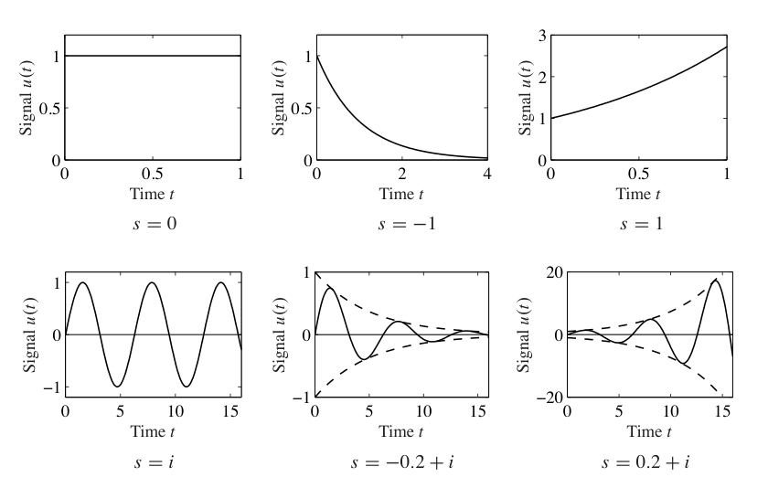
为了研究线性系统对指数输入 \(u(t)=e^{st}\) 的响应，考虑状态空间系统
令输入信号为 \(u(t)=e^{st}\)，并假设 \(s\ne\lambda_j(A)\)、\(j=1,\ldots,n\)，其中 \(\lambda_j(A)\) 是 \(A\) 的第 \(j\) 个特征值。状态为
如第 5.3 节所见，如果 \(s\ne\lambda(A)\)，积分可以计算，得到
因此式 (8.2) 的输出为
这是指数函数 \(e^{st}\) 和 \(e^{At}\) 的线性组合。式 (8.3) 中第一项是系统暂态响应。回忆 \(e^{At}\) 可以用 \(A\) 的特征值表示，在重特征值情形下使用若尔当形，因此暂态响应是形如 \(e^{\lambda_jt}\) 的项的线性组合，其中 \(\lambda_j\) 是 \(A\) 的特征值。如果系统稳定，则 \(e^{At}\to0\)，\(t\to\infty\)，这一项会消失。
输出 (8.3) 的第二项与输入 \(u(t)=e^{st}\) 成比例，称为纯指数响应。如果初始状态选择为
则输出只包含纯指数响应，并且状态和输出都与输入成比例：
这也是暂态项消失以后在稳态中看到的输出。从输入 \(u\) 到输出 \(y\) 的映射
就是系统 (8.2) 从 \(u\) 到 \(y\) 的传递函数。在 \(u(t)=e^{st}\) 的情形下，可以写成
这与式 (5.24) 中频率响应的定义相对应。
推导传递函数时有一个重要点：我们限制 \(s\ne\lambda_j(A)\)。当 \(s\) 等于这些 \(A\) 的特征值时，系统响应奇异，因为 \(sI-A\) 不可逆。如果 \(s=\lambda_j(A)\)，系统对指数输入 \(u=e^{\lambda_jt}\) 的响应为
其中 \(p(t)\) 是次数不超过特征值 \(\lambda_j\) 重数的多项式，见习题 8.2。
例 8.1 带阻尼振子
考虑带阻尼线性振子的响应，它的状态空间动态已在第 6.3 节研究过：
当 \(\zeta>0\) 时系统稳定，因此可以考察对输入 \(u=e^{st}\) 的稳态响应：
要计算对阶跃函数的稳态响应，取 \(s=0\)，得到
若要计算对正弦信号的稳态响应，写成
现在把 \(G(i\omega)\) 写成幅值和相位形式：
其中增益 \(M\) 和相位 \(\theta\) 为
还可以利用 \(G(-i\omega)\) 是 \(G(i\omega)\) 的复共轭这一事实，得到 \(G(-i\omega)=Me^{-i\theta}\)。代入输出方程：
对其他信号的响应，也可以把输入写成合适的指数响应组合，再利用线性性计算。
坐标变换
式 (8.2) 中的矩阵 \(A,B,C\) 依赖状态坐标系的选择。由于传递函数连接的是输入和输出，它应当对状态空间中的坐标变换不变。为说明这一点，考虑模型 (8.2)，并通过变换 \(z=Tx\) 引入新坐标，其中 \(T\) 是非奇异矩阵。系统变为
这个系统与式 (8.2) 形式相同，但矩阵 \(A,B,C\) 变为
计算变换后模型的传递函数：
这与系统描述 (8.2) 计算得到的传递函数 (8.4) 完全相同。因此，传递函数对状态空间坐标变换不变。
传递函数的另一个性质是，它对应于状态空间动态中既可达又可观的部分。特别地，如果使用 卡尔曼分解，第 7.5 节，那么传递函数只依赖既可达又可观子空间 \(\Sigma_{ro}\) 中的动态，见习题 8.7。
线性系统的传递函数
考虑由受控微分方程描述的线性输入输出系统：
其中 \(u\) 是输入，\(y\) 是输出。这类描述出现在许多应用中，第 2.2 节已经简要说明过。自行车动态和 AFM 建模就是两个具体例子。注意，这里把前面使用的系统描述推广了，允许输入及其导数同时出现。
为了确定系统 (8.8) 的传递函数，令输入为 \(u(t)=e^{st}\)。由于系统线性，存在同样是指数函数的输出 \(y(t)=y_0e^{st}\)。把这些信号代入式 (8.8)，得到
因此系统响应可以完全由两个多项式描述：
多项式 \(a(s)\) 是普通微分方程的特征多项式。如果 \(a(s)\ne0\)，则
系统 (8.8) 的传递函数因此是有理函数
其中多项式 \(a(s)\) 和 \(b(s)\) 由式 (8.9) 给出。注意，系统 (8.8) 的传递函数可以直接看出，因为 \(a(s)\) 和 \(b(s)\) 的系数正是 \(u\) 和 \(y\) 各阶导数的系数。传递函数的阶数定义为分母多项式的阶数。
式 (8.8) 到式 (8.11) 可以用来计算许多简单普通微分方程的传递函数。表 8.1 给出一些常见形式。前五个直接来自上面的分析。对 PID 控制器，使用指数输入的积分为 \((1/s)e^{st}\) 这一事实。
表 8.1：一些常见普通微分方程的传递函数。
| 类型 | 微分方程 | 传递函数 |
|---|---|---|
| 积分器 | \(\dot y=u\) | \(1/s\) |
| 微分器 | \(y=\dot u\) | \(s\) |
| 一阶系统 | \(\dot y+ay=u\) | \(1/(s+a)\) |
| 双积分器 | \(\ddot y=u\) | \(1/s^2\) |
| 带阻尼振子 | \(\ddot y+2\zeta\omega_0\dot y+\omega_0^2y=u\) | \(1/(s^2+2\zeta\omega_0s+\omega_0^2)\) |
| PID 控制器 | \(y=k_pu+k_d\dot u+k_i\int u\,dt\) | \(k_p+k_ds+k_i/s\) |
| 纯时滞 | \(y(t)=u(t-\tau)\) | \(e^{-s\tau}\) |
表中最后一项是纯时滞，即输出与较早时刻的输入相同。许多系统中都会出现时滞，典型例子包括神经传导、通信和质量输运。具有时滞的系统输入输出关系为
和前面一样，令输入为 \(u(t)=e^{st}\)。假设存在形式为 \(y(t)=y_0e^{st}\) 的输出，并代入式 (8.12)，得到
因此时滞传递函数为 \(G(s)=e^{-s\tau}\)。它不是有理函数，但除了无穷远处外是解析函数。复函数若在某一区域内没有奇点，就称为在该区域内解析。
例 8.2 电路元件
电路建模是传递函数的常见用途。比如考虑由欧姆定律 \(V=IR\) 描述的电阻，其中 \(V\) 是电阻两端电压，\(I\) 是通过电阻的电流，\(R\) 是电阻值。如果把电流看成输入、电压看成输出，那么电阻的传递函数为
\(Z(s)\) 也称为电路元件的阻抗。
接着考虑电感，其输入输出特性为
令电流为 \(I(t)=e^{st}\)，得到电压 \(V(t)=Lse^{st}\)，因此电感的传递函数为
电容由
刻画，类似分析给出从电流到电压的传递函数
利用传递函数，可以像在电阻网络中使用电阻值一样，使用复阻抗 \(Z(s)\) 对复杂电路进行代数分析。
例 8.3 运算放大器电路
为了进一步说明指数信号的用法，考虑第 3.3 节引入并在图 8.3a 中重画的运算放大器电路。第 3.3 节中的模型是一种简化，因为放大器的线性行为被建模为常数增益。实际上，放大器中存在显著动态，因此静态模型 \(v_{\mathrm{out}}=-kv\)，也就是式 (3.10)，应替换为动态模型。在线性范围内，可以把运算放大器建模为具有稳态频率响应
这个响应对应时间常数为 \(1/a\) 的一阶系统。参数 \(k\) 称为开环增益，乘积 \(ak\) 称为增益带宽积。典型值为 \(k=10^7\)，\(ak=10^7\) 到 \(10^9\) rad/s。
由于电路所有元件都建模为线性，如果用指数信号 \(e^{st}\) 驱动输入 \(v_1\)，那么稳态下所有信号都是同一形式的指数。于是可以用代数方式处理系统方程。和第 3.3 节中一样，利用流入放大器的电流很小，有
消去 \(v\)，得到系统传递函数
令 \(s=0\)，得到低频增益
这正是第 3.3 节式 (3.11) 给出的结果。放大器电路的带宽为
近似在 \(R_2/R_1\gg1\) 时成立。闭环系统增益在高频时按 \(R_2k/(\omega(R_1+R_2))\) 衰减。图 8.3b 显示了该传递函数在 \(k=10^7\)、\(a=100\) rad/s、\(R_2=10^6\,\Omega\)、\(R_1=1,10^2,10^4,10^6\,\Omega\) 下的频率响应。
注意，在求解这个例子时，我们没有显式把信号写成 \(v=v_0e^{st}\)，而是直接把 \(v\) 当成指数信号处理。这种简写在求解这类问题和操纵框图时很方便。与第 3.3 节比较可以看到，用传递函数分析系统和用静态系统分析一样容易。若把电阻 \(R_1,R_2\) 替换为阻抗，计算仍相同，见例 8.2。
到目前为止，讨论集中在普通微分方程上，不过传递函数也可以用于其他类型的线性系统。下面通过一个偏微分方程的传递函数例子说明。
例 8.4 热传播
考虑半无限金属杆中的一维热传播问题。假设输入是杆一端温度，输出是杆上某一点的温度。令 \(\theta(x,t)\) 表示位置 \(x\)、时间 \(t\) 处的温度。通过合适选择长度尺度和单位，热传播由偏微分方程描述：
并且可把关注点取为 \(x=1\)。偏微分方程的边界条件为
为了确定传递函数，选择输入 \(u(t)=e^{st}\)。假设偏微分方程有形式为
的解，代入式 (8.15) 得到
边界条件为 \(\Theta(0)=1\)。这个以 \(x\) 为自变量的普通微分方程有解
匹配半无限杆中有界这一条件和边界条件，得到 \(A=0\)、\(B=1\)，因此
系统传递函数为
和时滞情形一样，这个传递函数不是有理函数，而是解析函数。
增益、极点和零点
传递函数有许多有用解释，其特征常与重要系统性质相关。三个最重要的特征是增益、极点位置和零点位置。
系统零频增益由传递函数在 \(s=0\) 处的幅值给出。它表示阶跃输入下输出稳态值相对于输入稳态值的比值，因为阶跃可表示为 \(s=0\) 时的 \(u=e^{st}\)。对状态空间系统，我们已经在式 (5.22) 中计算过零频增益：
对写成线性微分方程的系统
若假设系统输入和输出都是常数 \(u_0,y_0\)，则有
因此零频增益为
接着考虑具有有理传递函数的线性系统：
多项式 \(a(s)\) 的根称为系统极点，多项式 \(b(s)\) 的根称为系统零点。如果 \(p\) 是一个极点，则 \(y(t)=e^{pt}\) 是式 (8.8) 在 \(u=0\) 下的解，也就是齐次解。极点 \(p\) 对应系统的一个模态，相应模态解为 \(e^{pt}\)。系统在任意激励后的无外力运动，是各个模态的加权和。
零点有不同解释。对应输入 \(u(t)=e^{st}\) 的纯指数输出为 \(G(s)e^{st}\)，前提是 \(a(s)\ne0\)。因此如果 \(b(s)=0\)，纯指数输出为零。传递函数的零点会阻断对应指数信号的传输。
对传递函数为
的状态空间系统，传递函数极点是状态空间模型中矩阵 \(A\) 的特征值。看出这一点的一种简单方式是，当 \(s\) 是系统特征值时，\(G(s)\) 无界，因为这正是特征多项式
也就是 \(sI-A\) 不可逆的位置。因此，状态空间系统的极点只依赖矩阵 \(A\)，而 \(A\) 表示系统固有动态。若传递函数所有极点都具有负实部，就称该传递函数稳定。
为了寻找状态空间系统的零点，注意零点是这样的复数 \(s\)：输入 \(u(t)=u_0e^{st}\) 会产生零输出。把纯指数响应 \(x(t)=x_0e^{st}\)、\(y(t)=0\) 代入式 (8.2)，得到
这可以写成
只有当左侧矩阵不满秩时，这个方程才存在非零 \(x_0,u_0\) 解。因此，零点就是使矩阵
失去秩的 \(s\) 值。
由于零点依赖 \(A,B,C,D\)，它们依赖输入和输出如何耦合到状态。特别注意，如果矩阵 \(B\) 满秩，则式 (8.17) 中的矩阵对所有 \(s\) 都有 \(n\) 个线性无关行。类似地，如果矩阵 \(C\) 满秩，则有 \(n\) 个线性无关列。这意味着 \(B\) 或 \(C\) 满秩的系统没有零点。特别地，如果系统完全受驱动，也就是每个状态都能独立控制，或如果完整状态都被测量，则系统没有零点。
观察传递函数极点和零点的一种方便方式是极零图，如图 8.4 所示。在图中，每个极点用叉号标出，每个零点用圆圈标出。如果固定位置处有多个极点或零点，常用重叠的叉号或圆圈，或其他标记表示。左半平面的极点对应系统稳定模态，右半平面的极点对应不稳定模态。因此称左半平面极点为稳定极点，右半平面极点为不稳定极点。零点也使用类似术语，虽然零点并不直接关系到系统稳定或不稳定。注意，要完整描述传递函数，还必须给出系统增益。
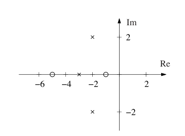
例 8.5 平衡系统
考虑图 8.5 所示平衡系统的动态。平衡系统传递函数可以直接从例 2.1 给出的二阶方程推导：
如果假设 \(\theta\) 和 \(\dot\theta\) 都很小，可以用一组线性二阶微分方程近似这个非线性系统：
令 \(F\) 为指数信号，则响应满足
解出 \(p\) 和 \(\theta\) 关于 \(F\) 的关系，得到小车位置和摆角的传递函数：
图 8.5 用例 6.7 中的参数显示了这两个传递函数的极零图。
如果假设阻尼很小，并取 \(c=0,\gamma=0\)，得到
这给出非零极点和零点
可以看到，这些位置与图 8.5 中的极点和零点位置很接近。
8.3 框图与传递函数
框图和传递函数的结合是表示控制系统的强大方式。系统中不同信号之间的传递函数，可以通过框图代数，对各模块传递函数作纯代数操纵来推导。为了说明如何做到这一点，先从系统的简单组合开始。
考虑图 8.6a 中由传递函数 \(G_1(s)\) 和 \(G_2(s)\) 串联组成的系统。令系统输入为 \(u=e^{st}\)。第一个模块的纯指数输出为 \(G_1u\)，它也是第二个系统的输入。第二个系统的纯指数输出为
串联系统的传递函数为
也就是各传递函数的乘积。这里乘法顺序来自我们把输入信号放在表达式右侧：先乘 \(G_1\)，再乘 \(G_2\)。不幸的是，这与常见图中的顺序相反，因为图中信号通常从左向右流动，所以必须小心。如果 \(G_1\) 或 \(G_2\) 是向量值传递函数，顺序就很重要，后面的例子会看到。
接着考虑图 8.6b 中传递函数为 \(G_1,G_2\) 的并联系统。令 \(u=e^{st}\) 为系统输入，第一个系统的纯指数输出为 \(y_1=G_1u\)，第二个系统输出为 \(y_2=G_2u\)。并联连接的纯指数输出为
因此并联系统传递函数为
最后考虑图 8.6c 中传递函数为 \(G_1,G_2\) 的反馈连接。令 \(u=e^{st}\) 为系统输入，\(y\) 为纯指数输出，\(e\) 为中间信号的纯指数部分，它由 \(u\) 与第二个模块输出相加得到。写出各模块和求和单元的关系：
消去 \(e\)，得到
因此反馈连接的传递函数为
这三种基本互连可作为计算更复杂系统传递函数的基础。
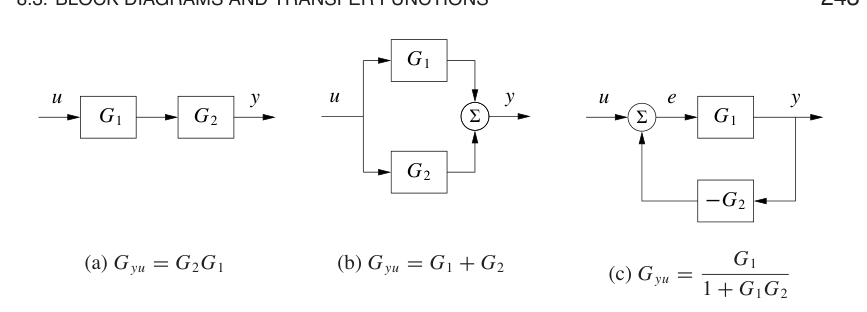
控制系统传递函数
考虑图 8.7 中的系统，它也出现在本章开头。系统有三个模块，分别表示过程 \(P\)、反馈控制器 \(C\) 和前馈控制器 \(F\)。\(C\) 与 \(F\) 合在一起定义系统控制律。系统有三个外部信号：参考或命令信号 \(r\)、负载扰动 \(d\) 和测量噪声 \(n\)。一个典型问题是弄清误差 \(e\) 与 \(r,d,n\) 之间的关系。
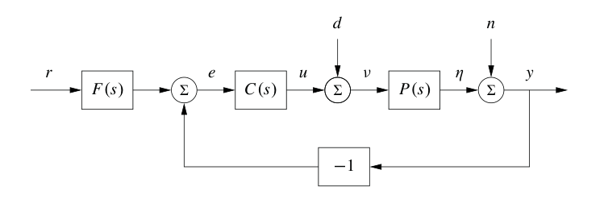
为了推导相关传递函数，假设所有信号都是指数信号，省略信号和传递函数的自变量，并沿环路追踪信号。先从关心的信号开始，这里是控制误差：
信号 \(y\) 是 \(n\) 和 \(\eta\) 之和，其中 \(\eta\) 是过程输出：
合并这些方程：
因此
解出 \(e\)：
所以误差是三项之和，分别依赖参考 \(r\)、测量噪声 \(n\) 和负载扰动 \(d\)。函数
分别是从参考、噪声和扰动到误差的传递函数。
也可以直接操纵框图来推导传递函数，如图 8.8 所示。假设希望计算参考 \(r\) 到输出 \(y\) 的传递函数。先合并图 8.7 中的过程和控制器模块，得到图 8.8a。然后使用反馈互连的代数等效来消去反馈环，得到图 8.8b，再使用串联互连规则，得到
类似操作可以得到其他传递函数，见习题 8.8。
这个推导说明了一种有效方法，可以操纵方程来得到反馈系统中输入和输出的关系。一般思想是从感兴趣的信号开始，沿反馈环路追踪信号，直到回到起始信号。经过一些练习，就可以直接从框图看出式 (8.18) 和式 (8.19)。例如注意，式 (8.19) 中所有项都有相同分母，而分子是从输入直接走到输出时经过的模块，不考虑反馈。这类规则可以用来凭观察计算传递函数，不过对有多个反馈环的系统，如果不明确写出代数方程，计算可能很棘手。
例 8.6 车辆转向
考虑例 5.12 中引入的车辆转向线性化模型。例 6.4 和例 7.3 为系统设计了状态反馈补偿器和状态估计器。图 8.9 给出了所得控制系统的框图。注意，我们把估计器分成两个部分，\(G_{\hat xu}(s)\) 和 \(G_{\hat xy}(s)\)，分别对应输入 \(u\) 和 \(y\)。控制器可描述为两个开环传递函数之和：
第一个传递函数 \(G_{uy}(s)\) 描述反馈项，第二个 \(G_{ur}(s)\) 描述前馈项。称它们为开环传递函数，是因为它们表示不考虑过程动态时信号之间的关系。为了推导这些函数，先计算每个模块的传递函数，再使用框图代数。
从估计器开始。估计器以 \(u\) 和 \(y\) 为输入，并产生估计 \(\hat x\)。这一过程的动态在例 7.3 中已经推导：
因此
用例 7.3 中 \(A,B,C,L\) 的表达式，得到
其中 \(l_1,l_2\) 是观测器增益，\(\gamma\) 是质心相对后轮的缩放位置。控制器是状态反馈补偿器，可看成常值的多输入单输出传递函数 \(u=-K\hat x\)。
现在计算整体控制系统传递函数。由框图代数可得
以及
其中 \(k_1,k_2\) 是控制器增益。
最后计算完整闭环动态。先推导过程 \(P(s)\) 的传递函数。可直接用例 5.12 给出的状态空间描述计算：
输入 \(r\) 到输出 \(y\) 的完整闭环系统传递函数为
注意，观测器增益 \(l_1,l_2\) 不出现在这个方程中。这是因为我们做的是稳态分析，而在完美模型假设下，稳态中估计状态精确跟踪系统状态。第 12 章会回到这个例子，研究这种方法的鲁棒性。
极零相消
由于传递函数常常是 \(s\) 的多项式之比，分子和分母有时会有公共因子，可以相消。有些相消只是代数简化，但另一些相消可能掩盖模型中的潜在脆弱性。特别地，如果极零相消发生在不同模块中的项恰好重合时，一旦其中一个系统稍有扰动，相消可能不再发生。有些情况下，这会导致预期行为与实际行为之间出现严重差异。
为了说明何时会有极零相消，考虑图 8.7 中 \(F=1\) 的框图，也就是没有前馈补偿，并设 \(C\) 和 \(P\) 为
从 \(r\) 到 \(e\) 的传递函数为
如果分子和分母多项式中有公共因子，这些项可以提出并从分子分母中消去。例如，如果控制器在 \(s=a\) 处有一个零点，而过程在 \(s=a\) 处有一个极点，则
其中 \(n_c'(s)\) 和 \(d_p'(s)\) 表示把 \(s+a\) 因子提出后剩下的多项式。当 \(a<0\)，也就是零点或极点位于右半平面时，我们看到它对传递函数 \(G_{er}\) 没有影响。
但如果计算扰动 \(d\) 到误差 \(e\) 的传递函数，也就是扰动对参考与输出之间误差的影响，则得到
注意，如果 \(a<0\)，极点位于右半平面，传递函数 \(G_{ed}\) 不稳定。因此，即使从 \(r\) 到 \(e\) 的传递函数看起来没有问题，假设完美极零相消，从 \(d\) 到 \(e\) 的传递函数仍可能表现出无界行为。这种不希望的行为是非稳定极零相消的典型结果。
极点和零点相消也可以从系统状态空间表示中理解。当发生极零相消时，可达性或可观性会丧失，见习题 8.11。一个结果是，传递函数只表示系统可达且可观子空间中的动态，见第 7.5 节。
例 8.7 巡航控制
对汽车线性化模型，从油门到速度的输入输出响应传递函数为
一种简单但不一定好的 PI 控制器设计方法，是选择 PI 控制器参数，使控制器在 \(s=-k_i/k_p\) 处的零点抵消过程在 \(s=a\) 处的极点。此时从参考到速度的传递函数为
控制设计似乎只需要选择增益 \(k_p\)。闭环系统动态是一阶的，时间常数为 \(1/(bk_p)\)。
图 8.10 显示汽车遇到道路坡度增加时的速度误差。与图 3.3b 中使用的控制器比较可以看到，基于极零相消的控制器性能很差。速度误差更大，并且需要很长时间才能稳定。注意，即使之后误差仍然很大，控制信号在 \(t=15\) s 以后几乎保持常值。为了理解发生了什么，分析系统。系统参数为
控制器参数为
闭环时间常数为 \(1/(bk_p)=2.5\) s，因此本来预期误差应在约 10 s 后稳定，也就是 4 个时间常数。从道路坡度到速度和控制信号的传递函数为
注意，被相消的模态 \(s=a=-0.0101\) 出现在 \(G_{v\theta}\) 中，但不出现在 \(G_{u\theta}\) 中。控制信号保持常值的原因是，控制器在 \(s=-0.0101\) 处有一个零点，抵消了缓慢衰减的过程模态。若被相消的极点不稳定，误差会发散。
这个例子的教训是，试图抵消不稳定或缓慢的过程极点是坏主意。第 12.4 节会更详细讨论极零相消。
代数环
分析或仿真由框图描述的系统时，需要形成描述完整系统的微分方程。很多情况下，可以通过合并各子系统的微分方程并代入变量来得到这些方程。当存在由子系统构成的闭合环路，并且这些子系统都在输入和输出之间有直接连接时，这种简单过程无法使用。这种情况称为代数环。
为了说明可能发生什么，考虑由两个模块组成的系统：一个一阶非线性系统
以及一个比例控制器 \(u=-ky\)。由于函数 \(h\) 不依赖 \(u\)，系统没有直接项。这时只需把 \(u\) 替换为 \(-ky\)，即可得到闭环系统方程：
这种过程可以用简单公式操纵自动完成。
如果存在直接项，情况就更复杂。如果 \(y=h(x,u)\)，把 \(u\) 替换为 \(-ky\) 后得到
为了得到关于 \(x\) 的微分方程，必须解代数方程
得到 \(y=\alpha(x)\)。这一般是一个复杂任务。
当存在代数环时，必须先求解代数方程，才能得到完整系统微分方程。解析代数环并非平凡问题，因为它要求符号求解代数方程。大多数面向框图的建模语言无法处理代数环，只会诊断出这些环存在。在模拟计算时代，常通过在环中引入快速动态来消除代数环。这会产生同时含有快模态和慢模态的微分方程，数值求解较困难。Modelica 等高级建模语言使用多种复杂方法来解析代数环。
8.4 伯德图
线性系统的频率响应可以从传递函数中通过令 \(s=i\omega\) 得到，这对应复指数输入
所得输出形式为
其中 \(M\) 和 \(\theta\) 是 \(G\) 的增益和相位：
\(G\) 的相位也称为 \(G\) 的辐角，这个术语来自复变函数理论。
由线性性可知，对单个正弦信号，无论是 \(\sin\) 还是 \(\cos\)，响应会被放大 \(M\) 倍，并发生相位移动 \(\theta\)。注意 \(-\pi<\theta\le\pi\)，因此反正切必须根据分子和分母符号选取象限。表示相位时，常使用角度而不是弧度。本书用 \(\angle G(i\omega)\) 表示以度为单位的相位，用 \(\arg G(i\omega)\) 表示以弧度为单位的相位。另外，虽然总取 \(\arg G(i\omega)\) 在 \((-\pi,\pi]\) 中，但会把 \(\angle G(i\omega)\) 取为连续函数，因此它可以超出 \(-180^\circ\) 到 \(180^\circ\) 的范围。
频率响应 \(G(i\omega)\) 因此可用两条曲线表示：增益曲线和相位曲线。增益曲线给出 \(|G(i\omega)|\) 随频率 \(\omega\) 的变化，相位曲线给出 \(\angle G(i\omega)\)。一种特别有用的画法，是增益图使用双对数坐标，相位图使用频率对数、相位线性坐标。这类图称为 伯德图，如图 8.11 所示。
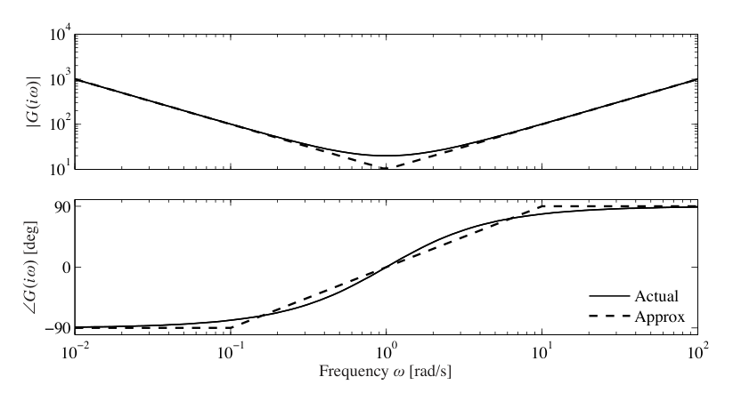
绘制和解释 伯德图
伯德图之所以流行，部分原因是它们容易手绘，也容易解释。由于频率轴是对数刻度，它们可以覆盖线性系统在很宽频率范围内的行为。
考虑有理函数形式的传递函数
有
因此可以通过加减分子、分母中各项对应的增益来计算增益曲线。同样，
相位曲线也可类似确定。由于多项式可以写成如下类型项的乘积：
只要能画出这些项的伯德图即可。复杂系统的伯德图随后由这些项的增益和相位相加得到。
传递函数中最简单的项是 \(s^k\)。如果该项出现在分子中，则 \(k>0\)；出现在分母中，则 \(k<0\)。该项的增益和相位为
增益曲线是斜率为 \(k\) 的直线，相位曲线是 \(90k^\circ\) 的常数。\(k=1\) 对应微分器，斜率为 1，相位为 \(90^\circ\)。\(k=-1\) 对应积分器，斜率为 -1，相位为 \(-90^\circ\)。图 8.12 显示了若干 \(s^k\) 的伯德图。
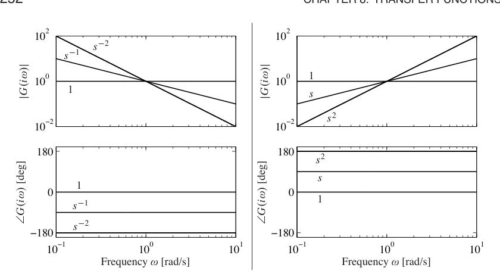
接着考虑一阶系统传递函数
有
因此
图 8.13a 显示了 伯德图，幅值已经按零频增益归一化。增益曲线和相位曲线都可以用下面直线近似：
相位在 \(\omega<a/10\) 时近似为 \(0^\circ\)，在 \(a/10<\omega<10a\) 时按每十倍频程 \(-45^\circ\) 下降，在 \(\omega>10a\) 时近似为 \(-90^\circ\)。
近似增益曲线在频率 \(\omega=a\) 之前为水平线，这个频率称为断点或转角频率；之后曲线在双对数坐标中的斜率为 -1。相位曲线在频率 \(a/10\) 之前为零，然后以每十倍频程 \(45^\circ\) 的速度下降，直到频率 \(10a\)，之后保持在 \(-90^\circ\)。注意，一阶系统在低频时像常数，在高频时像积分器；可与图 8.12 中的伯德图比较。
最后考虑二阶系统传递函数
有
其中相位需要按正确象限连续选取。增益曲线在 \(\omega\ll\omega_0\) 时渐近斜率为零；在 \(\omega\) 很大时，渐近斜率为 -2。最大增益 \(Q=\max_\omega |G(i\omega)|\approx1/(2\zeta)\)，称为 \(Q\) 值，出现在 \(\omega\approx\omega_0\) 附近。相位在低频时为零，在高频时趋近 \(-180^\circ\)。可用下面分段线性表达式近似：
图 8.13b 显示了 伯德图。注意，在 \(\omega=\omega_0\) 附近，渐近近似较差，并且 伯德图在该频率附近强烈依赖阻尼比 \(\zeta\)。
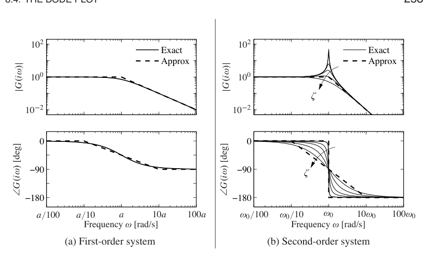
有了基本函数的伯德图，就可以绘制更一般系统的频率响应。下面例子说明基本思想。
例 8.8 传递函数的渐近近似
考虑传递函数
图 8.14 给出了这个传递函数的伯德图，完整传递函数用实线表示，渐近近似用虚线表示。
先看增益曲线。低频时，幅值为
当达到 \(s=a\) 处的极点时，增益开始以斜率 -1 下降，直到达到 \(s=b\) 处的零点。此时斜率增加 1，渐近线净斜率变为 0。这个斜率一直保持到 \(s=\omega_0\) 处的二阶极点，之后渐近线变为斜率 -2。可以看到，除了二阶极点峰值附近，增益曲线相当准确，因为本例中的 \(\zeta\) 较小。
相位曲线更复杂，因为相位影响延伸得更远。极点的影响从 \(s=a/10\) 开始，此时相位从 0 变为每十倍频程 \(-45^\circ\) 的斜率。零点从 \(s=b/10\) 开始影响相位，使相位曲线出现一段平坦部分。在 \(s=10a\) 处，极点的相位贡献结束，只剩零点带来的每十倍频程 \(+45^\circ\) 斜率。在二阶极点位置 \(s\approx\omega_0\) 处，相位发生 \(-180^\circ\) 跳变。最后在 \(s=10b\) 处，零点的相位贡献结束，相位保持在 \(-180^\circ\)。可以看到，相位的直线近似不如增益曲线准确，但它确实捕捉了相位随频率变化的基本特征。
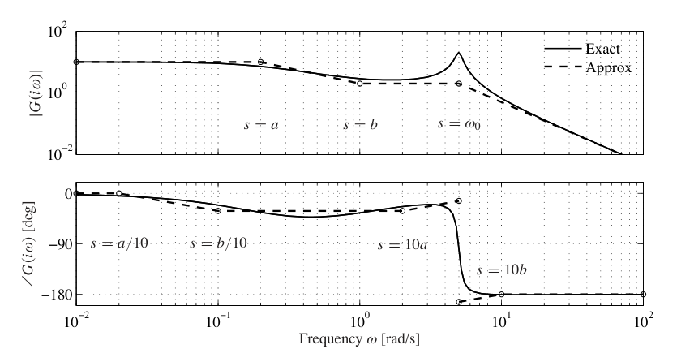
伯德图能快速概览系统行为。由于任意信号都可以分解为正弦信号之和，可以想象系统在不同频率范围内的行为。系统可看作一个滤波器，根据频率响应改变输入信号的幅值和相位。例如，如果某个频率范围内增益曲线斜率为常数，并且相位接近零，系统对这些频率信号的作用就可以解释为纯增益。类似地，如果斜率为 +1 且相位接近 \(90^\circ\)，系统作用可解释为微分器，如图 8.12 所示。
图 8.15 显示了三种常见频率响应。图 8.15a 中的系统称为低通滤波器，因为低频增益为常数，高频增益下降。注意低频相位为零，高频相位为 \(-180^\circ\)。图 8.15b 和图 8.15c 中的系统分别称为带通滤波器和高通滤波器，原因类似。
为了说明怎样从 伯德图读出不同行为，考虑图 8.15b 中的带通滤波器。在 \(\omega=\omega_0\) 附近，信号通过时增益不变。不过，远低于或远高于 \(\omega_0\) 的频率会被衰减。相位也受到滤波器影响，如相位曲线所示。低于 \(a/100\) 的频率有 \(90^\circ\) 相位超前，高于 \(100a\) 的频率有 \(90^\circ\) 相位滞后。这些作用分别对应在这些频率范围内对信号微分和积分。
例 8.9 转录调控
考虑由单个基因构成的基因电路。我们希望研究蛋白质浓度对 mRNA 动态扰动的响应。考虑两种情形：组成型启动子，也就是无调控；以及自抑制，也就是负反馈，如图 8.16 所示。系统动态为
其中 \(u\) 是影响 mRNA 转录的扰动项。
无反馈时有 \(\alpha(p)=\alpha_0\)，系统平衡点为
从扰动 \(u\) 到蛋白质 \(p\) 的传递函数为
负调控情形下，
平衡点满足
所得传递函数为
其中
图 8.16c 显示了两个电路的频率响应。可以看到，反馈电路会衰减低频扰动对系统的影响，但相对开环系统，会略微放大高频扰动。注意，这些曲线与图 8.3b 中运算放大器的频率响应曲线非常相似。
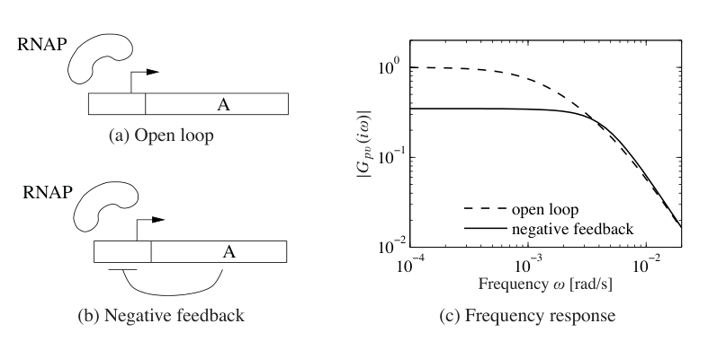
从实验得到传递函数
系统传递函数概括了输入输出响应，对分析和设计非常有用。不过，从第一性原理建模可能困难且耗时。幸运的是，常常可以直接测量频率响应，并拟合一个传递函数，建立某个应用的输入输出模型。为此，用固定频率的正弦信号扰动系统输入。达到稳态后，幅值比和相位滞后给出该激励频率处的频率响应。扫过一系列频率后，就得到完整频率响应。
使用相关技术可以非常准确地确定频率响应，再通过曲线拟合从频率响应得到解析传递函数。这种方法的成功催生了自动完成该过程的仪器和软件，称为频谱分析仪。下面用两个例子说明基本概念。
例 8.10 原子力显微镜
为了说明频谱分析的用处，考虑第 3.5 节引入的原子力显微镜动态。对这个系统，实验确定频率响应特别有吸引力，因为它的动态非常快，所以实验可以很快完成。图 8.17 给出一个典型例子，显示实验确定的频率响应，实线。在这个案例中，频率响应在不到一秒内得到。拟合到数据的传递函数为
更准确地说，上式中分子和分母的二阶因子相乘，\(\omega_k=2\pi f_k\)，并且
图中虚线为拟合结果。与零点相关的频率位于增益曲线的极小值处，与极点相关的频率位于增益曲线的局部极大值处。相对阻尼比被调节为使极大值和极小值拟合良好。当增益曲线拟合良好后，再调节时滞，使相位曲线也拟合良好。压电驱动被预加载，习题 3.7 中推导了其动态的简单模型。2.42 kHz 处的极点对应习题中推导的跳床模态，其他谐振是更高模态。
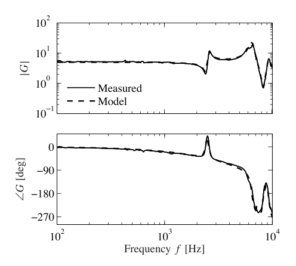
例 8.11 瞳孔光反射动态
人眼是一个很容易进行实验的器官。它有一个控制系统，通过调节瞳孔开口来调节视网膜上的光强。Stark 在 20 世纪 60 年代对这个控制系统进行了大量研究 [184]。为了确定其动态，在眼睛上的光强以正弦方式变化，同时测量瞳孔开口。一个基本困难是，闭环系统对内部系统参数不敏感，因此分析闭环系统只能提供很少的内部性质信息。Stark 使用了一个巧妙实验技术，使他能够同时研究开环和闭环动态。他通过改变聚焦在眼睛上的光束强度来激励系统，并测量瞳孔面积，如图 8.18 所示。
使用覆盖整个瞳孔的宽光束时，测量给出闭环动态。使用足够窄的光束时，光束不受瞳孔开口影响，因此得到开环动态。图 8.19 给出了一个确定开环动态的实验结果。对增益曲线拟合传递函数，得到
如图 8.19 中虚线所示，这条曲线对相位曲线拟合很差。加入时滞可以改善相位曲线拟合，而不改变增益曲线。最终拟合模型为
其伯德图在图 8.19 中用实线显示。关于从第一性原理建模瞳孔反射的详细讨论见 [119]。
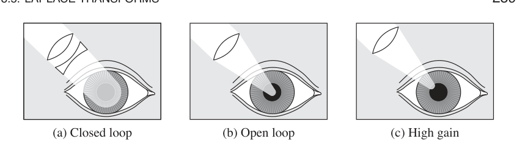
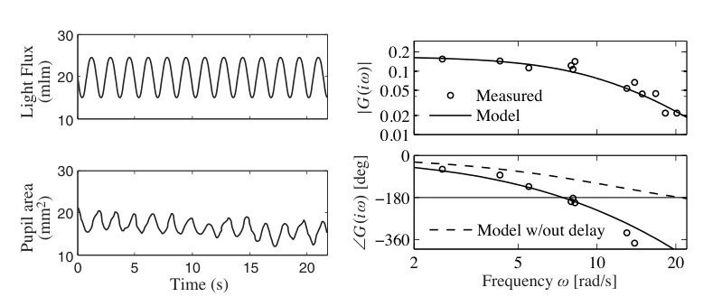
注意，对 AFM 驱动和瞳孔动态而言，从第一性原理推导合适模型都不容易。实践中，常常把解析建模与实验参数辨识结合起来。对动态较慢的系统，实验确定频率响应的吸引力较弱，因为实验会花很长时间。
8.5 拉普拉斯变换
传统上，传递函数是通过拉普拉斯变换引入的，本节用这种形式推导传递函数。这里假设读者基本熟悉拉普拉斯变换；不熟悉的读者可以安全地跳过本节。Widder 的经典书 [198] 是本节数学材料的好参考。
传统上，拉普拉斯变换用于计算线性系统对不同激励的响应。今天我们可以很容易用计算机生成这些响应。对基本控制应用，只需要少数几个初等性质。不过，拉普拉斯变换本身有优美理论，可以使用复变函数理论中的许多强大工具深入理解系统行为。
考虑函数 \(f(t)\)、\(f:\mathbb{R}_+\to\mathbb{R}\)，它可积，并且对某个有限 \(s_0\in\mathbb{R}\)，在大 \(t\) 时增长不快于 \(e^{s_0t}\)。拉普拉斯变换把 \(f\) 映射为复变量函数 \(F=\mathcal{L}f:\mathbb{C}\to\mathbb{C}\)，定义为
这个变换有一些性质，使它非常适合处理线性系统。
首先，变换是线性的，因为
接着计算函数导数的拉普拉斯变换。由分部积分可得
因此
如果初始条件为零，这个公式特别简单，因为函数求导对应于变换乘以 \(s\)。
既然求导对应乘以 \(s\)，可以预期积分对应除以 \(s\)。这确实成立。计算积分的拉普拉斯变换，用分部积分得到
因此
接着考虑零初始状态的线性时不变系统。第 5.3 节已经看到，输入 \(u\) 和输出 \(y\) 的关系由卷积积分给出：
其中 \(h(t)\) 是系统脉冲响应。对这个表达式作拉普拉斯变换：
因此，输入输出响应由 \(Y(s)=H(s)U(s)\) 给出，其中 \(H,U,Y\) 分别是 \(h,u,y\) 的拉普拉斯变换。系统理论解释是，线性系统输出的拉普拉斯变换是两项乘积：输入的拉普拉斯变换 \(U(s)\)，以及系统脉冲响应的拉普拉斯变换 \(H(s)\)。数学解释是，卷积的拉普拉斯变换等于参与卷积函数的变换之积。公式 \(Y(s)=H(s)U(s)\) 比卷积简单得多，这是拉普拉斯变换在工程中流行的原因之一。
也可以用拉普拉斯变换推导状态空间系统的传递函数。考虑线性状态空间系统
在所有初始值均为零的假设下取拉普拉斯变换：
消去 \(X(s)\)，得到
传递函数为
这与式 (8.4) 相同。
8.6 延伸阅读
用系统对正弦信号的稳态响应刻画线性系统，这个思想由傅里叶在研究固体热传导时引入 [76]。很久以后，电气工程师 Steinmetz 使用它，并引入 \(i\omega\) 方法来分析电路。Gardner 和 Barnes [81] 通过拉普拉斯变换引入传递函数，并用它们计算线性系统响应。拉普拉斯变换在早期控制阶段非常重要，因为它可以通过表格寻找暂态响应，见例如 [110]。结合框图之后，传递函数和拉普拉斯变换为处理复杂系统提供了强大技术。今天，基于拉普拉斯变换计算响应的重要性下降了，因为线性系统响应很容易用计算机生成。
关于使用拉普拉斯变换和传递函数建模、分析线性输入输出系统，有许多优秀书籍。传统控制教材如 [61]、[79] 和 [162] 都是代表性例子。极零相消曾是早期控制理论中的一个谜题。有理函数中的公共因子当然可以相消，但这种相消具有系统理论后果，直到 卡尔曼的线性系统分解被引入后才得到清楚理解 [118]。接下来的几章将大量使用传递函数来分析稳定性，并描述模型不确定性。
习题
8.1 令 \(G(s)\) 为线性系统的传递函数。证明如果施加输入
则稳态输出为
提示：先证明取复数实部是线性运算，然后使用这一事实。
8.2 考虑系统
计算系统的指数响应，并用它推导从 \(u\) 到 \(y\) 的传递函数。证明当 \(s=a\)，也就是传递函数的极点时，对指数输入 \(u(t)=e^{st}\)，响应为
8.3 倒立摆。例 2.2 中引入了倒立摆模型。忽略阻尼，并在竖直向上位置附近线性化，得到由下列矩阵刻画的线性系统：
求系统传递函数。
8.4 与极点和零点对应的解。考虑微分方程
(a) 令 \(\lambda\) 为特征多项式
的根。证明当 \(u(t)=0\) 时，微分方程有解 \(y(t)=e^{\lambda t}\)。
(b) 令 \(\kappa\) 为多项式
的零点。证明如果输入为 \(u(t)=e^{\kappa t}\)，则微分方程存在一个恒等为零的解。
8.5 运算放大器。考虑第 3.3 节引入并在例 8.3 中分析的运算放大器。把电阻 \(R_2\) 替换为串联电阻和电容，可以用运放构造 PI 控制器，如图 3.10 所示。所得电路传递函数为
其中 \(k\) 是运算放大器增益，\(R_1,R_2\) 是补偿网络中的电阻，\(C\) 是电容。
(a) 在假设 \(kR_2>R_1\) 下，绘制系统 伯德图草图。图中应标出关键特征，包括低频增益和相位、增益曲线斜率、增益改变斜率的频率等。
(b) 假设现在包含放大器的一些动态，如例 8.1 所述。这相当于把增益 \(k\) 替换为传递函数
计算系统所得传递函数，也就是用 \(G(s)\) 替代 \(k\)，并在下面参数下求极点和零点：
(c) 用直线近似绘制 (b) 中传递函数的伯德图，并与传递函数的精确图比较，可用 MATLAB。确保标出图中的重要特征。
8.6 状态空间系统的传递函数。考虑线性状态空间系统
证明传递函数为
其中
并且
是 \(A\) 的特征多项式。
8.7 卡尔曼分解。证明系统传递函数只依赖 卡尔曼分解中既可达又可观子空间的动态。提示：考虑式 (7.27) 给出的表示。
8.8 使用框图代数，证明图 8.7 中从 \(d\) 到 \(y\)、从 \(n\) 到 \(y\) 的传递函数为
8.9 简单零点的伯德图。证明传递函数
的伯德图可近似为
相位在 \(\omega<a/10\) 时约为 \(0^\circ\)，在 \(a/10<\omega<10a\) 时以每十倍频程 \(45^\circ\) 增加，在 \(\omega>10a\) 时约为 \(90^\circ\)。
8.10 矢量推力飞机。考虑例 2.9 中描述的矢量推力飞机横向动态。证明动态可以用下列框图描述：横向力矩通过 \(r/(Js^2)\) 产生姿态角 \(\theta\)，姿态角经重力耦合 \(-mg\) 影响横向运动，并通过 \(1/(ms^2+cs)\) 产生横向位置 \(x\)。用这个框图计算从 \(u_1\) 到 \(\theta\) 和 \(x\) 的传递函数，并证明它们满足
8.11 公共极点。考虑图 8.7 形式的闭环系统，其中 \(F=1\)，并且 \(P\) 和 \(C\) 有一个公共极点。证明如果每个系统都写成状态空间形式，则所得闭环系统不可达且不可观。
8.12 拥塞控制。考虑第 3.4 节描述的拥塞控制模型。令 \(w\) 表示 \(N\) 个相同源中每个源的窗口大小，\(q\) 表示端到端丢包概率，\(b\) 表示路由器缓冲区中的包数，\(p\) 表示路由器丢包概率。写 \(\bar w=Nw\) 表示从所有 \(N\) 个源接收的包总数。证明线性化模型可以由传递函数描述：
其中 \((w_e,b_e)\) 是系统平衡点，\(\tau_e\) 是稳态往返时间，\(\tau_f\) 是前向传播时间。
8.13 带 PD 控制的倒立摆。考虑归一化倒立摆系统，其传递函数为
见习题 8.3。该系统的比例微分控制律传递函数为
见表 8.1。假设选择
计算闭环动态，并说明系统对参考信号具有良好跟踪，但扰动抑制性能不好。
8.14 车辆悬架 [96]。汽车中使用主动和被动阻尼，以便在崎岖路面上提供平顺乘坐体验。图中显示了带阻尼系统汽车的示意图。
这个模型称为四分之一车模型，汽车近似为两个质量，一个代表四分之一车身，另一个代表车轮。执行器根据车身与车轮中心之间的距离，也就是振 rattling 空间，在车轮和车身之间施加力 \(F\)。
令 \(x_b,x_w,x_r\) 分别表示车身、车轮和路面相对平衡点的高度。系统的简单模型由车身和车轮的牛顿方程给出：
其中 \(m_b\) 是四分之一车身质量，\(m_w\) 是车轮的有效质量，包括制动器和部分悬架系统，也称非簧载质量，\(k_t\) 是轮胎刚度。对由弹簧和阻尼器构成的传统减振器，有
对主动减振器，力 \(F\) 可以更一般，也可以依赖驾驶条件。乘坐舒适性可由从路面高度 \(x_r\) 到车身加速度 \(a=\ddot x_b\) 的传递函数 \(G_{ax_r}\) 刻画。证明该传递函数满足
其中
是轮胎跳动频率。这个方程说明，任何减振器能达到的舒适性都存在基本限制。
8.15 振动吸收器。抑制振动是常见工程问题。考虑图中所示阻尼器。扰动振动是作用在质量 \(m_1\) 上的正弦力，阻尼器由质量 \(m_2\) 和弹簧 \(k_2\) 组成。证明从扰动力到质量 \(m_1\) 高度 \(x_1\) 的传递函数为
应如何选择质量 \(m_2\) 和刚度 \(k_2\)，以消除频率为 \(\omega_0\) 的正弦振荡？关于振动吸收器的更多细节见 Den Hartog 的经典教材 [57, pp. 87-93]。